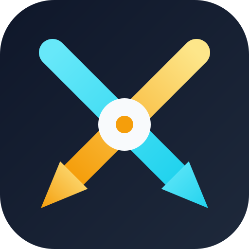
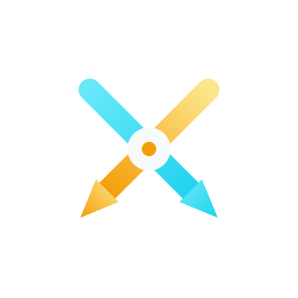
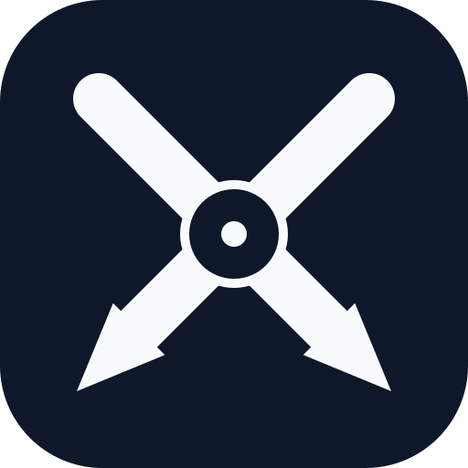
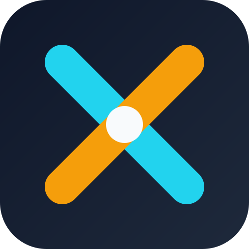

Production pack: master, adaptive (FG+BG для Android), monochrome, favicon.
#0F172A
#22D3EE
#F59E0B
#F8FAFC

Только мотив, центрирован в 66dp safe-circle. Масштаб 0.58 — маска-круг не съест стрелки даже на Pixel Launcher.

Градиент базы. Android применит launcher-mask (круг/squircle/teardrop).

Как это выглядит в Pixel-launcher.

Для 32/16 px — наконечники и amber-core стёрлись бы в шум. Вместо них — толстый × из двух цветных штрихов и белый диск в центре.
